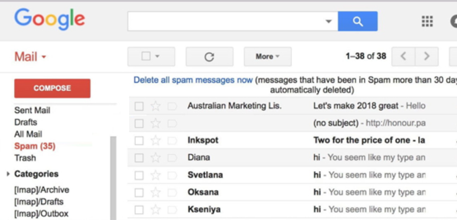

Inteligența Artificială Responsabilă
Provocări și considerații etice în IA
 

IA are aplicabilitate în aproape toate domeniile …
… și potențial să ne transforme viețile.
Ce este Etica în IA?
Ce ar trebui să facă mașina autonomă?


Sursa: https://www.moralmachine.net/
Responsabilitatea
Responsabilitatea
Responsabilitatea este esențială pentru gestionarea riscurilor create de IA.
- Cum funcționează sistemul IA?
- Dacă sistemul nu funcționează bine – dacă este nesigur, este părtinitor sau face o greșeală – cine este responsabil?
- Cum ar putea cineva să raporteze o problemă cu sistemul de IA?
- Ce s-ar întâmpla dacă ar face-o?
De ce este o provocare?
IA creează o distanță între utilizatori și procesul decizional. Informațiile, argumentele și alegerile sunt ascunse în spatele tehnologiei, devenind opace.
Lipsa de transparență face dificil de înțeles cum funcționează sistemul și de ce a luat o anumită decizie.
Este greu de identificat o problemă și de a găsi soluții eficiente.
Astfel, există riscul unei “prăbușiri totale a responsabilității”.

Sursa: https://www.theguardian.com/world/2024/feb/16/air-canada-chatbot-lawsuit
Cazul Air Canada
Responsabilitatea chatbot-urilor
{kind=link}